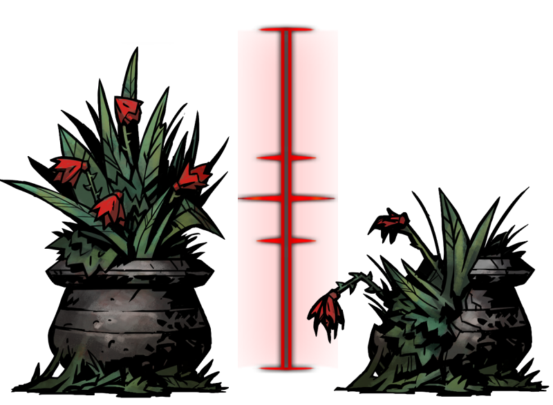

Bloodflowers

23.1% Scouting. A map is nestled between the thorns and blossoms!
15.3% Any Loot x2 + 16.7% The Blood. The potting soil reveals its treasure!
5.1% Disease: Tetanus. Thorns hook into the flesh, a cloying sap seeps into the hero's blood!
2.5% Random Disease.


60% Bleed. The hero's scars weep open when bathed in the crimson fluid!
20% Disease: Crimson Curse. This bloody artifact invites ailment!
20% Any Loot x2 + 16.7% Bleed. Treasure lies in the gore-filled basin!
20% Disease: Crimson Curse. This bloody artifact invites ailment!
20% Any Loot x2 + 16.7% Bleed. Treasure lies in the gore-filled basin!